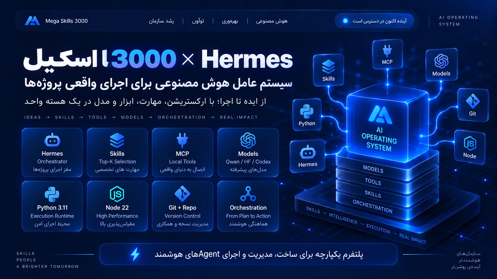
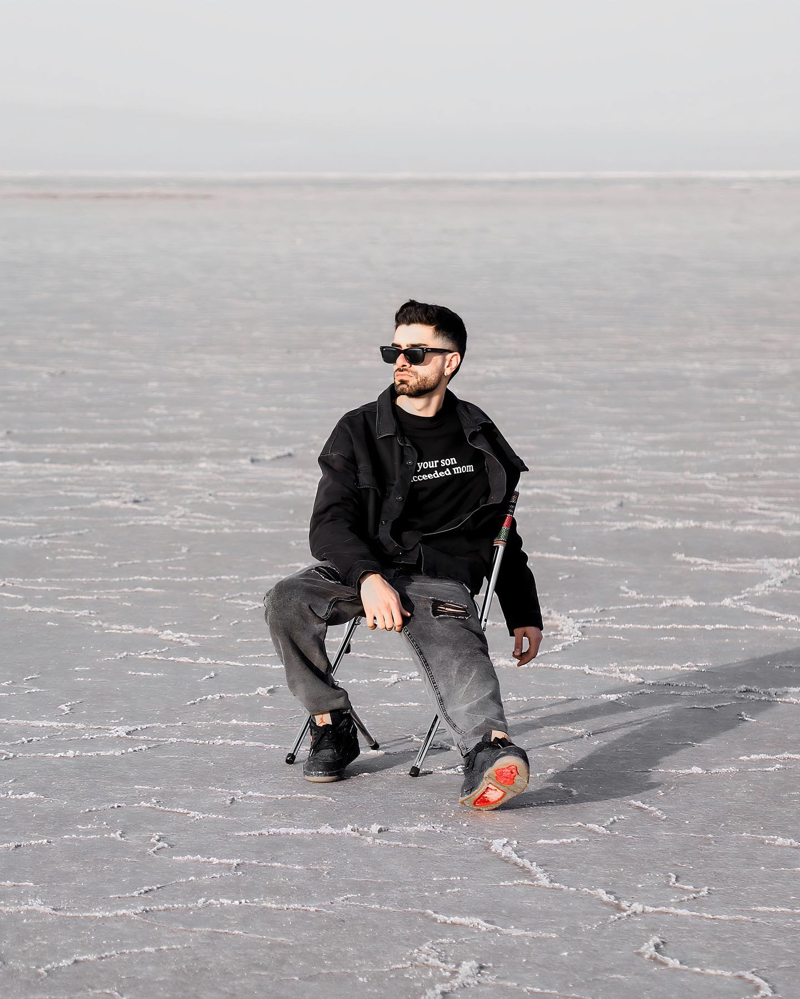

اول مسئله
هر درخواست ابتدا تحلیل میشود؛ ابزار و مدل بعد از روشن شدن مسئله انتخاب میشوند.
ABOUT / MEGA SKILLS 3000 WHO WE ARE
MEGA SKILLS 3000 یک پروژه در حال ساخت است: لایهای هماهنگکننده که میان یک درخواست و ۳۰۰۰ مهارت، مسیر درست را پیدا میکند. این صفحه میگوید چرا شروع کردیم، تا امروز چه ساختهایم و چه چیزی هنوز ساخته نشده است.

01 / OUR STORY
ابزارهای هوشمند زیاد شدهاند، اما نتیجه لزوماً بهتر نشده است. ابزارها پراکندهاند، هزینهها قابل پیشبینی نیستند و زمینه کار میان آنها گم میشود.
MEGA SKILLS 3000 از همین نقطه شروع شد: بهجای انتخاب ابزار، از خود مسئله شروع کنیم و بگذاریم یک هسته مرکزی تصمیم بگیرد کدام مهارت، در کدام لحظه و با چه زمینهای وارد عمل شود.

02 / MISSION & APPROACH
هر درخواست ابتدا تحلیل میشود؛ ابزار و مدل بعد از روشن شدن مسئله انتخاب میشوند.
رجیستری ۳۰۰۰ مهارت و ۱۵۰۰۰ محرک، هر انتخاب را قابل توضیح و قابل بررسی میکند.
معماری سیستم بهصورت بصری روایت میشود تا کاربر ببیند پشت هر پاسخ چه میگذرد.
03 / VALUES
هیچ قابلیتی را پیش از ساخته شدن، ساختهشده معرفی نمیکنیم.
API بدون کلید دسترسی پاسخ نمیدهد و در نبود تنظیمات، بسته میماند.
در نبود ظرفیت رایگان، سیستم متوقف میشود و بیصدا به مسیر پولی نمیرود.
از ساخت تا استقرار، طوری طراحی شده که فقط با یک گوشی قابل انجام باشد.
04 / TIMELINE
یک تجربه وب سینماتیک بر اساس ۳۰ فریم مرجع، برای نمایش ایده هسته مرکزی.
مسیریاب قطعی (deterministic) روی رجیستری ۳۰۰۰ مهارت و ۱۵۰۰۰ محرک.
همان مسیریاب، در قالب توابع بدونحالت روی Vercel؛ قابل استقرار فقط با آیفون.
محتوای هر ۳۰۰۰ مهارت با بررسی SHA-256، حالت برنامه با دستورالعملهای تأییدشده و حالت پاسخ با مدلهای رایگان و جایگزینی خودکار میان آنها.
تاریخچه وظایف، ورود امن بدون چسباندن کلید، اجرای ابزارها (MCP) و نسخه قابل نصب روی گوشی (PWA).
05 / STATUS
06 / FOUNDER
Content Director · مدیر محتوا
تفکر استراتژیک، تولید سینمایی و شناخت فرهنگ روز را ترکیب میکنم تا محتوایی بسازم که توجه و اعتماد میگیرد. همراه خلاق برندهای ممتاز در مد، عطر، مهماننوازی و فرهنگ؛ از اولین ایده تا آخرین فریم.

MEGA SKILLS 3000 / THE NEXT CHAPTER
موتور ۳۰۰۰ را امتحان کنید، معماری را کاوش کنید و ببینید سیستم چطور درخواست شما را مسیریابی میکند.